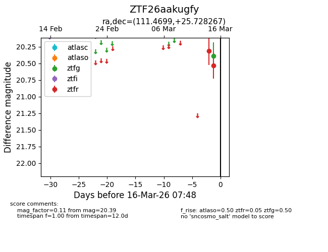
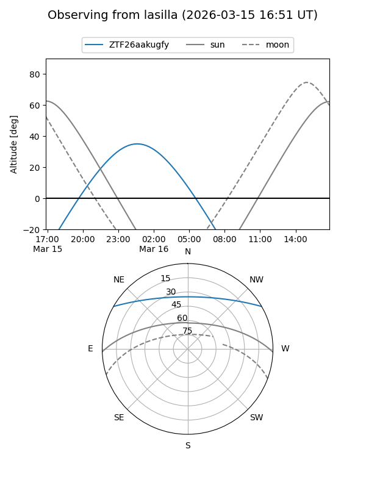
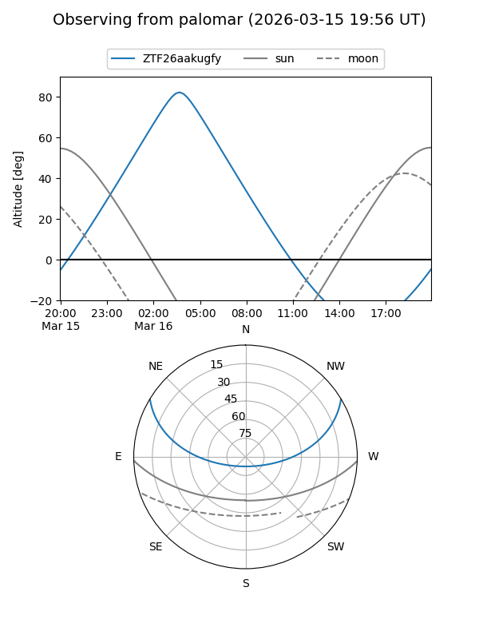

ZTF26aakugfy
Target ZTF26aakugfy at 2026-03-16 07:50
Aliases and brokers:
FINK: link
Lasair: link
ALeRCE: link
alt names
ZTF26aakugfy (ztf,fink_ztf)
Coordinates:
equatorial (ra, dec) = 111.4699,+25.72827
equatorial (HMS+DMS) = 07:25:52.77,+25:43:41.76
galactic (l, b) = (192.8947,+18.54076)
Flags:
likely cv
Photometry:
last atlaso=nan, ztfg=20.39, ztfr=20.53
1 atlaso, 1 ztfg, 2 ztfr detections
Lightcurve

Visibility


Additional plots